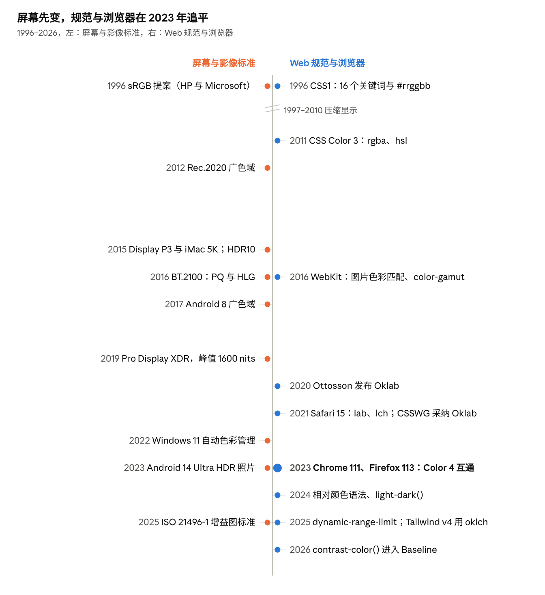

Web 的颜色在 2016–2025 年间从“只有 sRGB”变成了“与设备无关的色彩空间 + 广色域 + 开始支持 HDR”。驱动力是硬件先变、规范和浏览器追赶：Apple 在 2015–2016 年把 Mac 和 iPhone 换成 Display P3 屏幕，CSS 当时却规定颜色只在 sRGB 里（WebKit 博客原话），于是 WebKit 先动手。
dynamic-range-limit、HDR 图片（ISO 21496-1 增益图）和 WebGPU HDR 画布让 HDR 走进网页。#ff0000 和 color(display-p3 1 0 0) 是两种红，后者在 P3 屏上更饱和。
左边的硬件与影像标准在 2015–2017 年密集变化，右边的 CSS 直到 2021–2023 年才集中跟上；HDR 则在 2025 年前后同时出现在两边。
一块屏幕能显示什么颜色，由四件事决定：三个原色的位置（色域）、白点、传递曲线（数值怎么变成亮度）、以及亮度范围和位深。网页上的一个颜色值，只有说清楚是哪个空间里的坐标，系统才能把它换算到这块屏幕上。
人眼与参照系。 CIE 1931 根据 1920 年代 Wright 与 Guild 的配色实验定义了 XYZ，是与设备无关的参照。xy 色度图里两种光的混合落在连线上，所以三原色屏幕的色域是一个三角形。xy 不是感知均匀的，1976 年的 CIELAB 试图修正，2020 年的 Oklab 又修正了 CIELAB 在蓝色区的色相偏移。
| 色彩空间 | 年份 | 定义者 | 原色 / 传递曲线 | 占 CIE 1931 xy 面积 |
|---|---|---|---|---|
| sRGB | 1996（IEC 61966-2-1:1999） | HP 与 Microsoft | BT.709 原色、D65；分段曲线，约等于 gamma 2.2；参考亮度 80 cd/m² | 35.9% |
| Display P3 | 2015 | Apple | DCI-P3 原色 + D65 + sRGB 曲线 | 53.6%（DCI-P3） |
| Rec.2020 | 2012 | ITU-R | 630 / 532 / 467 nm 单色原色；10 或 12 位 | 75.8% |
| Rec.2100 | 2016 | ITU-R | Rec.2020 原色 + PQ（SMPTE ST 2084）或 HLG 两种 HDR 曲线 | 同 Rec.2020 |
wideColorGamut；Windows 11 22H2 的自动色彩管理把桌面合成器改为 FP16，把不认识色彩的应用从 sRGB 映射到屏幕色域。一个常见误解：Apple 说 P3 “饱和度高 25%”，是和 iPad Air 2 的比较，不是色域面积。按 xy 面积算，DCI-P3 约为 sRGB 的 1.5 倍。
CSS 颜色经历了四代：关键词和十六进制（CSS1）、更便于人写的 sRGB 写法（Color 3）、与设备无关的色彩空间（Color 4）、颜色运算与 HDR（Color 5 和 Color HDR）。前三代的所有写法都只是 sRGB 的不同拼法。
| 规范 | 状态与年份 | 新增 | 备注 |
|---|---|---|---|
| CSS1 | 1996 | 16 个基本关键词、#rgb / #rrggbb、rgb() |
关键词来自 HTML；CSS2 加了 orange |
| CSS2 | 1998 | 28 个系统颜色（ButtonFace、WindowText 等） |
Color 3 废弃了它们，后来以 CSS system colors 的形式保留一部分 |
| CSS Color 3 | 2011 REC | rgba()、hsl()、hsla()、transparent、currentColor、147 个 X11 命名色 |
明确“RGB 即 sRGB”；X11 名字里 darkgray 比 gray 还浅 |
| CSS Color 4 | 2022 CR | lab()、lch()、oklab()、oklch()、hwb()、color()、none、空格语法、rebeccapurple |
color() 的预定义空间：srgb、srgb-linear、display-p3、a98-rgb、prophoto-rgb、rec2020、xyz-d50、xyz-d65；规定色域映射 |
| CSS Color 5 | 工作草案（2026-06） | color-mix()、相对颜色语法 from、light-dark()、contrast-color()、device-cmyk()、@color-profile |
color-mix() 不指定空间时默认 Oklab |
| CSS Color HDR 1 | 工作草案（2024-12 起） | dynamic-range-limit、hdr-color()、ictcp()、jzazbz()、rec2100-pq / hlg / linear |
编辑 Chris Lilley；HDR 参考白 203 cd/m² |
同一个“红”在各代规范里的写法：
/* CSS1：关键词与十六进制，都是 sRGB */
color: red; color: #f00; color: rgb(255, 0, 0);
/* Color 3：透明度与 HSL，仍是 sRGB */
color: rgba(255, 0, 0, .5); color: hsl(0 100% 50%);
/* Color 4：指明色彩空间，可以超出 sRGB */
color: color(display-p3 1 0 0); /* P3 屏上更饱和的红 */
color: oklch(62.8% 0.258 29.2); /* 亮度 / 色度 / 色相 */
color: lab(54.3% 80.8 69.9);
/* Color 5：由已有颜色算出新颜色 */
color: color-mix(in oklab, red 60%, white);
color: oklch(from var(--brand) calc(l + .1) c h);
color: light-dark(#222, #eee);
color: contrast-color(var(--bg)); /* 黑或白 */
/* HDR：限制页面里 HDR 内容的亮度 */
img { dynamic-range-limit: standard; }
/* 按屏幕能力分支 */
@media (color-gamut: p3) { … }
@media (dynamic-range: high) { … }
为什么要 OKLCH。 HSL 的“亮度 50%”对黄色和蓝色看起来完全不同；sRGB 里蓝到白的渐变会发紫。Oklab 的目标是等距离就是等感知差距，所以改亮度不会带动色相，生成调色板和渐变更稳定。2021 年 9 月 Chris Lilley 开了 CSSWG issue #6642，10 月 13 日工作组决议加入 oklab() / oklch()，并把 Oklab 定为非传统颜色的默认插值空间。
色域映射的争论。 一个 oklch 颜色可能超出屏幕色域。规范描述了裁剪、降低色度等做法，但浏览器一开始都直接逐通道裁剪，色相会变。issue #9449（2023）批评这“破坏了 oklch 的意义”；2024 年 Chrome 的 Christopher Cameron 开 #10579 比较更快的静态映射算法，讨论仍在继续。
这些写法的差别在三件事：坐标轴指什么、能不能超出 sRGB、坐标上的等距是不是看起来的等距。前三种只是 sRGB 的换写，lab / oklab 系与设备无关，color() 是“指明哪个 RGB 空间”。
| 写法 | 三个坐标 | 能表示的范围 | 感知均匀 | 常见坑 |
|---|---|---|---|---|
#rrggbb、rgb() |
红、绿、蓝的编码值 0–255 | 只有 sRGB | 否 | 数值是伽马编码后的，不是光强；数值的中点不是亮度的中点 |
hsl() |
色相角、饱和度、“亮度” | 只有 sRGB | 否 | 亮度 50% 的黄色和蓝色看起来差很远（OKLCH 亮度 0.97 对 0.45） |
hwb() |
色相、混入的白、混入的黑 | 只有 sRGB | 否 | 类似取色器的想法，问题同 HSL |
lab()、lch() |
亮度 L 0–100，a/b 或色度/色相；D50 白点 | 所有可见色 | 大体 | 蓝紫区改变亮度或色度时色相会漂（蓝变紫） |
oklab()、oklch() |
亮度 L 0–1，色度 C（实用上限约 0.37），色相 H；D65 | 所有可见色 | 更好 | 同一亮度下不同色相的最大色度不同，很容易写出色域外的颜色 |
color(display-p3 …) 等 |
指定空间里的 R G B，0–1 | 该空间的三角形 | 否 | 同样的数字在不同空间是不同的颜色 |
同一个颜色 rebeccapurple 的各种写法（由 sRGB 换算），以及一个 sRGB 写不出来的红：
color: #663399;
color: rgb(102 51 153);
color: hsl(270 50% 40%);
color: hwb(270 20% 40%);
color: lab(32.39% 38.42 -47.69);
color: oklch(44.0% 0.160 303.4);
color: color(display-p3 0.374 0.210 0.579); /* 同一个颜色，P3 坐标不同 */
/* P3 的最红：换到 sRGB 是 (1.093, -0.227, -0.150)，超出范围 */
color: color(display-p3 1 0 0); /* oklch(64.9% 0.300 29.0) */
color: red; /* oklch(62.8% 0.258 29.2) */
插值也不同。 同样从红到蓝，渐变在哪个空间里算，结果差很多：
linear-gradient(in srgb, red, blue) /* 中间发暗、发灰的紫 */
linear-gradient(in oklab, red, blue) /* 亮度平顺，中间是偏亮的紫 */
linear-gradient(in oklch, red, blue) /* 沿色相环走，经过品红，饱和度不掉 */
linear-gradient(in oklch longer hue, red, blue) /* 绕远路，经过黄和绿 */
none 是“缺失”，不是 0。 oklch(70% 0 none) 没有色相，和彩色插值时用对方的色相，不会出现“灰向红插值时先变成别的颜色”。getComputedStyle 返回的仍是作者写的空间（如 oklch(…)），而不是换成 rgb()。Safari 先行、Chrome 和 Firefox 在 2023 年一起追平：Interop 2022 与 2023 都把“色彩空间与颜色函数”列为重点，2023 年 5 月 Lab / LCH / Oklab / OKLCH 在三大引擎互通。
| 特性 | Safari | Chrome / Edge | Firefox | Baseline |
|---|---|---|---|---|
color-gamut 媒体查询 |
10 | 58 | 110 | 2023 |
dynamic-range 媒体查询 |
13.1 | 98 | 100 | 2022 |
lab() lch() color() hwb() |
15（2021-10） | 111（2023-03） | 113（2023-05） | 2023-05 |
oklab() oklch() |
15.4 | 111 | 113 | 2023-05 |
color-mix() |
16.2（2022-12） | 111 | 113 | 2023-05 |
相对颜色语法 from |
18 | 119 | 128 | 2024 |
light-dark() |
17.5 | 123 | 120 | 2024-05 |
contrast-color() |
26 | 147 | 146 | 2026-04 |
dynamic-range-limit |
26（不含 constrained） |
136（2025-04） | — | 未达 |
色彩管理的历史比 CSS 语法更曲折。 关键问题是“没有标注色彩空间的内容怎么办”：当作 sRGB 换算到屏幕，还是把数值直接交给屏幕。后者在广色域屏上会过饱和。
gfx.color_management.mode = 2），CSS 颜色和未标注图片仍用设备空间。这个默认值至今未变，bug 1488619 主张改为全管理，仍未关闭。--enable-color-correct-rendering 后面；Chrome 94（2021）让 2D Canvas 完全按 sRGB 做色彩管理。待核对：color(display-p3) 在 Safari 里确切的首个版本（2020 年 WebKit 博客说 macOS Mojave / iOS 11 起可用）；Chrome 全面色彩管理在各平台的版本。
像素接口比 CSS 更难升级，因为它们直接暴露数组：每个像素是哪个空间、各占几位，都要写进 API。
// 2D Canvas：Chrome 94；Safari（macOS 12.1 / iOS 15.1）
const ctx = canvas.getContext('2d', { colorSpace: 'display-p3' });
ctx.fillStyle = 'color(display-p3 1 0 0)';
const img = ctx.getImageData(0, 0, w, h, { colorSpace: 'display-p3' });
// WebGL：Baseline 2024
gl.drawingBufferColorSpace = 'display-p3';
// WebGPU HDR：Chrome 129，允许超过 1.0 的值
context.configure({ device, format: 'rgba16float',
toneMapping: { mode: 'extended' } });
// 视频：解码前询问能力
navigator.mediaCapabilities.decodingInfo({ type: 'media-source',
video: { contentType: 'video/mp4; codecs="hvc1"', width: 3840, height: 2160,
bitrate: 2e7, framerate: 30,
transferFunction: 'pq', colorGamut: 'rec2020', hdrMetadataType: 'smpteSt2086' } });
dataType: "float16" 并增加 rec2100-pq / hlg 空间。发布状态待核对。dynamic-range-limit 要解决的问题：让作者把缩略图压到 standard，只在全屏查看时放开。推动力主要来自这几类人：硬件厂商制造需求，规范编辑和浏览器工程师设计语法，色彩科学家提供模型，影像行业带来 HDR 标准，设计工具与框架把它们交到普通开发者手里。无障碍社区则在对比度上提出另一组要求。
| 群体 | 代表 | 做了什么 |
|---|---|---|
| 早期网页与设计书 | Netscape、Lynda Weinman | 256 色显示器时代的 216 色“浏览器安全色”；Weinman 1996 年的书让它普及 |
| 操作系统厂商 | HP + Microsoft；Apple；Google Android；Microsoft Windows | 1996 年提出 sRGB；2015 年 Display P3 与全线广色域屏；2017 年 Android 广色域、Ultra HDR；2022 年 Windows 自动色彩管理 |
| W3C 与规范编辑 | Chris Lilley（W3C，PNG 合著者）、Tab Atkins（Google）、Lea Verou、Una Kravets | 编写 Color 4 / 5 / HDR；Lilley 与 Verou 做了 Color.js（2022 公开），作为规范的参考实现 |
| 浏览器工程师 | WebKit 的 Dean Jackson、Simon Fraser、Sam Weinig；Chrome 的 Christopher Cameron、Ken Russell；Igalia；Mozilla | 2016 年 WebKit《Improving Color on the Web》；Cameron 提出 dynamic-range-limit、HDR Canvas、色域映射算法；Interop 2022 / 2023 |
| 色彩科学 | Björn Ottosson | 2020-12-23 发布 Oklab；动机是游戏开发里简单的变亮变暗；Photoshop 渐变也改用 Oklab |
| 影像与广播 | BBC、NHK、Dolby、Netflix、Disney、Adobe、ISO | HLG 与 PQ（BT.2100，2016）、HDR10、Dolby Vision；增益图标准 ISO 21496-1 |
| 设计工具与框架 | Sketch 48（2017）、Figma（2024）、Evil Martians、Radix Colors 3（2023）、Open Props、Tailwind v4（2025） | 设计稿可以是 P3；文章《OKLCH in CSS》（2022）与 oklch 取色器；默认调色板改用 oklch |
| 无障碍社区 | WCAG、Andrew Somers（APCA） | WCAG 2 的对比度公式建立在 sRGB 上；APCA 曾进入 WCAG 3 草案，2023 年被移除，算法至今未定 |
两个关键场合：
一个小插曲：rebeccapurple（#663399）2014 年 6 月由 Daniel Glazman 提议，纪念 Eric Meyer 早逝的女儿 Rebecca，工作组两天内达成共识，四家浏览器都承诺实现。
手机已经是广色域与 HDR 的主力，头显的硬件也在 P3 附近；但 WebXR 规范里只有 sRGB，网页在头显里的颜色还很原始。
| 设备 | 显示 | 色域 / 亮度 | 与 Web 的关系 |
|---|---|---|---|
| iPhone / iPad | OLED、mini-LED（XDR） | P3；EDR 余量约 8–16 倍 | Safari 最早支持 P3 CSS 与 Canvas；Safari 26 支持 HDR 图片 |
| Android 手机 | OLED 为主 | 8.0 起可申请广色域；14 起 Ultra HDR 拍照 | Chrome 显示 Ultra HDR / ISO 增益图 |
| Apple Vision Pro | micro-OLED，约 2300 万像素 | 92% DCI-P3；支持 Dolby Vision、HDR10、HLG 播放 | visionOS 2 的 Safari 默认开启 WebXR，仅 immersive-vr |
| Meta Quest | Quest 3 为 LCD + pancake 透镜 | 系统默认：初代 Quest Rec.2020，Quest 2 Rec.709；Quest 3 未公布 | 原生 SDK 要求应用声明内容所用的色彩空间，由系统换算 |
| Samsung Galaxy XR（2025） | micro-OLED | 约 90% DCI-P3 | Android XR 上的 Chrome |
| HDR 电视 | OLED、QD-OLED、mini-LED | HDR10（PQ，Rec.2020 容器）、Dolby Vision、HLG | 主要通过流媒体 App，网页中的 HDR 视频依赖 MediaCapabilities |
| 彩色电子墨水 | E Ink Kaleido 3（2022） | 4096 色、16 级灰；彩色 150 ppi | 浏览器仍按 sRGB 渲染，饱和度远低于 sRGB |
| 智能手表 | LTPO OLED | Apple Watch Ultra 3 最亮 3000 nits | 没有浏览器 |
头显屏幕已经覆盖 90% 以上的 DCI-P3，原生应用可以用 P3 甚至 HDR；但网页只有在“平面网页”里用得到这些能力，进入 WebXR 沉浸模式后仍只有 sRGB。
| 平台 | 显示 | 浏览器里的颜色能力 | WebXR |
|---|---|---|---|
| visionOS 26（Vision Pro） | micro-OLED，92% DCI-P3；视频支持 Dolby Vision / HDR10 / HLG | Safari 26：HDR 图片、dynamic-range-limit、WebGPU、<model> 元素（USDZ，可用 .exr / .hdr 环境光照）、空间视频与 180°/360° 视频 |
visionOS 2 起默认开启，只有 immersive-vr；immersive-ar 返回不支持，网页不能叠加在透视画面上 |
| Android XR（Galaxy XR，2025-10） | micro-OLED，约 90% DCI-P3 | Chrome | 支持 immersive-ar、命中测试、深度感知、光照估计 |
| Meta Horizon OS（Quest 3） | LCD；两个 4MP 彩色透视摄像头 | Quest Browser | 支持 immersive-ar：透明像素处显示现实画面，脚本拿不到透视像素 |
colorFormat 只有 RGBA / sRGB 和压缩格式，没有浮点或广色域格式。WebXR–WebGPU 绑定仍是提案，也没有色彩空间参数。对比之下，平面 Canvas 和 WebGPU 已经能输出 display-p3 和 HDR。打印。 CSS Color 5 的 device-cmyk() 和 @color-profile 是给打印准备的，目前都被标为“有风险”（at risk），可能从规范中移除。
建议分两集，每集约 7–8 分钟，沿用前几期的形式：页面信息密度高、多放代码和关系图。这个题目可以在画面里直接画颜色：用 Canvas 绘制色度图和渐变对比（视频本身是 sRGB / BT.709，超出 sRGB 的颜色只能用标注示意）。
上集 · 屏幕与规范
#ff0000，在 2010 年的显示器和今天的手机上不是同一种红。darkgray 比 gray 浅）、rebeccapurple。color()、lab()、oklch() 代码卡；“色彩空间 + 坐标”的表示法。下集 · HDR、设备与推动者
color-mix()、from 相对颜色、light-dark()、contrast-color()，从一个品牌色生成整套调色板。mode 2；Windows 自动色彩管理。dynamic-range-limit、WebGPU extended、float16 Canvas、MediaCapabilities。@media (color-gamut: p3) 渐进增强、对比度仍按 WCAG 2 检查。规范
浏览器与平台
人物与社区
设备与色彩科学
未能从原始页面核对的：Safari 首次支持 color(display-p3) 的版本、Chrome 各平台全面色彩管理的版本、float16 Canvas 的发布状态、CSS 最终采用的色域映射算法。
Markdown 原文与视频稿件：sources/web-color。返回目录